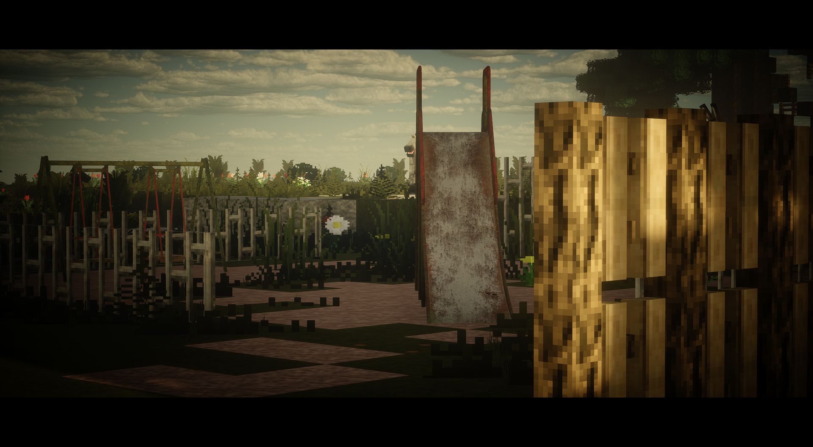

Survivre à tout prix
Serveur Roleplay Strict & Immersion Totale
Serveur Roleplay Strict & Immersion Totale



Il y a 21 ans, le 12 juin 2013, un virus expérimental créé pour soigner les maladies mentales, s'est échappé d'un laboratoire gouvernemental. Il a muté et s'est propagé rapidement, transformant la majorité de la population en monstre pâle, ou qu' il ne leur reste qu’un instinct animal dans une quête éternelle de chair fraîche. Ce virus a déclenché une pandémie qui a rendu toute personne qui a eu un contact avec le virus en une sorte de “Zombie”, plongeant le monde dans le chaos. Les gens infectés perdent leur humanité, devenant des créatures monstrueuses assoiffées de chair et de sang. La propagation rapide du virus a précipité l'effondrement des sociétés et des gouvernements.